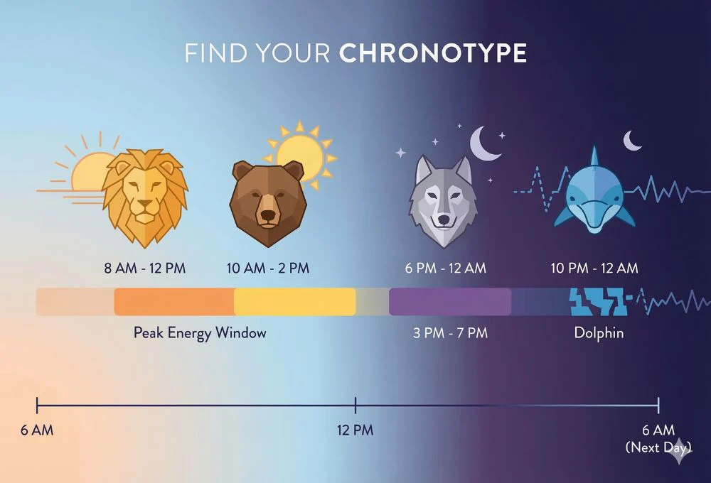

A chronotype is more than just being an “early bird” or a “night owl”. It is your body's natural disposition to feel alert or sleepy based on the time of day and night.
It is deeply tied to the internal master clock in your brain: the circadian rhythm. The circadian rhythm guides your sleep cycles, hormone production, and core body functions by reacting to daylight exposure.
When daylight fades, your body produces melatonin to signal sleepiness. However, genetics cause everyone's rhythms to differ slightly—meaning we don't all produce melatonin at the exact same intervals. These unique variations categorize us into four distinct profiles:

This infographic explains the core traits of the four chronotypes — credit to HushHome